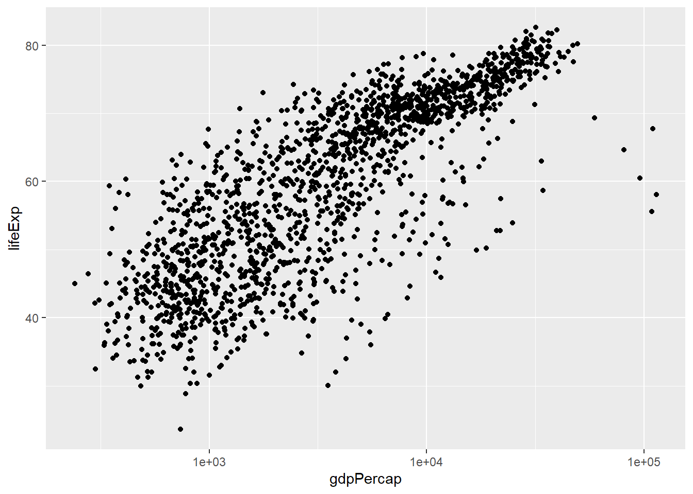
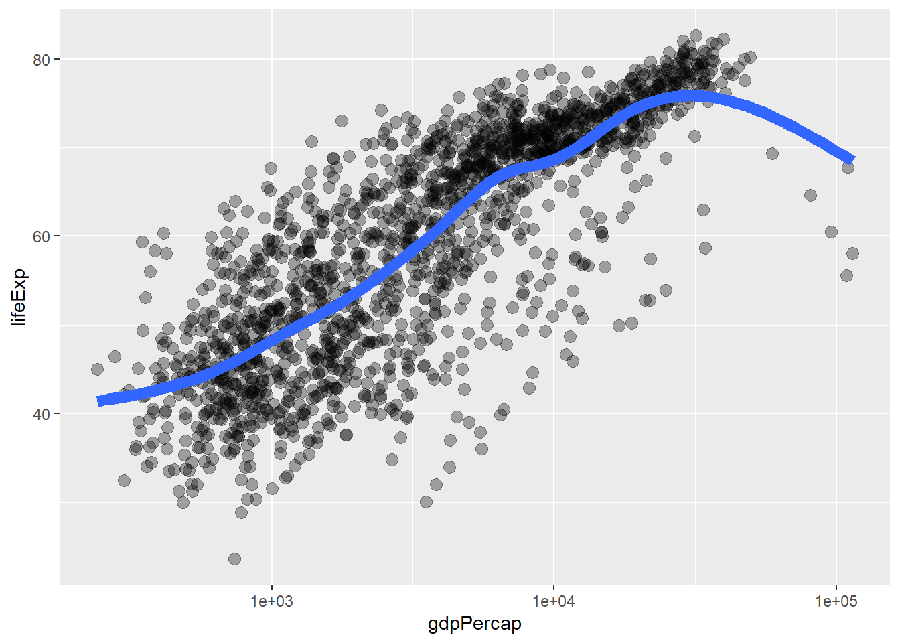

12 ODD: Basic care and feeding of data in R
This chapter is an optional deep dive (ODD) that might be useful to you. Feel free to ignore it if you don’t need this bit of support.
12.1 Buckle your seatbelt
Now is the time to make sure you are working in an appropriate directory on your computer, probably through the use of an RStudio project. Enter getwd() in the Console to see current working directory or, in RStudio, this is displayed in the bar at the top of Console.
You should clean out your workspace. In RStudio, click on the “Clear” broom icon from the Environment tab or use Session > Clear Workspace. You can also enter rm(list = ls()) in the Console to accomplish same.
Now restart R. This will ensure you don’t have any packages loaded from previous calls to library(). In RStudio, use Session > Restart R. Otherwise, quit R with q() and re-launch it.
Why do we do this? So that the code you write is complete and re-runnable. If you return to a clean slate often, you will root out hidden dependencies where one snippet of code only works because it relies on objects created by code saved elsewhere or, much worse, never saved at all. Similarly, an aggressive clean slate approach will expose any usage of packages that have not been explicitly loaded.
Finally, open a new R script and develop and run your code from there. In RStudio, use File > New File > R Script. Save this script with a name ending in .r or .R, containing no spaces or other funny stuff, and that evokes whatever it is we’re doing today. Example: cm004_data-care-feeding.r.
Another great idea is to do this in an R Markdown document. See Test drive R Markdown for a refresher.
12.2 Data frames are awesome
Whenever you have rectangular, spreadsheet-y data, your default data receptacle in R is a data frame. Do not depart from this without good reason. Data frames are awesome because…
- Data frames package related variables neatly together,
- keeping them in sync vis-a-vis row order
- applying any filtering of observations uniformly
- Most functions for inference, modelling, and graphing are happy to be passed a data frame via a
data =argument. This has been true in base R for a long time. - The set of packages known as the tidyverse takes this one step further and explicitly prioritizes the processing of data frames. This includes popular packages like dplyr and ggplot2. In fact the tidyverse prioritizes a special flavor of data frame, called a “tibble”.
Data frames – unlike general arrays or, specifically, matrices in R – can hold variables of different flavors, such as character data (subject ID or name), quantitative data (white blood cell count), and categorical information (treated vs. untreated). If you use homogeneous structures, like matrices, for data analysis, you are likely to make the terrible mistake of spreading a dataset out over multiple, unlinked objects. Why? Because you can’t put character data, such as subject name, into the numeric matrix that holds white blood cell count. This fragmentation is a Bad Idea.
12.3 Get the Gapminder data
We will work with some of the data from the Gapminder project. I’ve released this as an R package, so we can install it from CRAN like so:
Now load the package:
12.4 Meet the gapminder data frame or “tibble”
By loading the gapminder package, we now have access to a data frame by the same name. Get an overview of this with str(), which displays the structure of an object.
str(gapminder)
#> tibble [1,704 x 6] (S3: tbl_df/tbl/data.frame)
#> $ country : Factor w/ 142 levels "Afghanistan",..: 1 1 1 1 1 1 1 1 1 1 ...
#> $ continent: Factor w/ 5 levels "Africa","Americas",..: 3 3 3 3 3 3 3 3 3 3 ...
#> $ year : int [1:1704] 1952 1957 1962 1967 1972 1977 1982 1987 1992 1997 ...
#> $ lifeExp : num [1:1704] 28.8 30.3 32 34 36.1 ...
#> $ pop : int [1:1704] 8425333 9240934 10267083 11537966 13079460 14880372..
#> $ gdpPercap: num [1:1704] 779 821 853 836 740 ...str() will provide a sensible description of almost anything and, worst case, nothing bad can actually happen. When in doubt, just str() some of the recently created objects to get some ideas about what to do next.
We could print the gapminder object itself to screen. However, if you’ve used R before, you might be reluctant to do this, because large datasets just fill up your Console and provide very little insight.
This is the first big win for tibbles. The tidyverse offers a special case of R’s default data frame: the “tibble”, which is a nod to the actual class of these objects, tbl_df.
If you have not already done so, install the tidyverse meta-package now:
Now load it:
library(tidyverse)
#> -- Attaching packages --------------------------------------- tidyverse 1.3.0 --
#> v ggplot2 3.3.3 v purrr 0.3.4
#> v tibble 3.0.4 v dplyr 1.0.2
#> v tidyr 1.1.2 v stringr 1.4.0
#> v readr 1.4.0 v forcats 0.5.0
#> -- Conflicts ------------------------------------------ tidyverse_conflicts() --
#> x dplyr::filter() masks stats::filter()
#> x dplyr::lag() masks stats::lag()Now we can boldly print gapminder to screen! It is a tibble (and also a regular data frame) and the tidyverse provides a nice print method that shows the most important stuff and doesn’t fill up your Console.
## see? it's still a regular data frame, but also a tibble
class(gapminder)
#> [1] "tbl_df" "tbl" "data.frame"
gapminder
#> # A tibble: 1,704 x 6
#> country continent year lifeExp pop gdpPercap
#> <fct> <fct> <int> <dbl> <int> <dbl>
#> 1 Afghanistan Asia 1952 28.8 8425333 779.
#> 2 Afghanistan Asia 1957 30.3 9240934 821.
#> 3 Afghanistan Asia 1962 32.0 10267083 853.
#> 4 Afghanistan Asia 1967 34.0 11537966 836.
#> 5 Afghanistan Asia 1972 36.1 13079460 740.
#> 6 Afghanistan Asia 1977 38.4 14880372 786.
#> 7 Afghanistan Asia 1982 39.9 12881816 978.
#> 8 Afghanistan Asia 1987 40.8 13867957 852.
#> 9 Afghanistan Asia 1992 41.7 16317921 649.
#> 10 Afghanistan Asia 1997 41.8 22227415 635.
#> # ... with 1,694 more rowsIf you are dealing with plain vanilla data frames, you can rein in data frame printing explicitly with head() and tail(). Or turn it into a tibble with as_tibble()!
head(gapminder)
#> # A tibble: 6 x 6
#> country continent year lifeExp pop gdpPercap
#> <fct> <fct> <int> <dbl> <int> <dbl>
#> 1 Afghanistan Asia 1952 28.8 8425333 779.
#> 2 Afghanistan Asia 1957 30.3 9240934 821.
#> 3 Afghanistan Asia 1962 32.0 10267083 853.
#> 4 Afghanistan Asia 1967 34.0 11537966 836.
#> 5 Afghanistan Asia 1972 36.1 13079460 740.
#> 6 Afghanistan Asia 1977 38.4 14880372 786.
tail(gapminder)
#> # A tibble: 6 x 6
#> country continent year lifeExp pop gdpPercap
#> <fct> <fct> <int> <dbl> <int> <dbl>
#> 1 Zimbabwe Africa 1982 60.4 7636524 789.
#> 2 Zimbabwe Africa 1987 62.4 9216418 706.
#> 3 Zimbabwe Africa 1992 60.4 10704340 693.
#> 4 Zimbabwe Africa 1997 46.8 11404948 792.
#> 5 Zimbabwe Africa 2002 40.0 11926563 672.
#> 6 Zimbabwe Africa 2007 43.5 12311143 470.
as_tibble(iris)
#> # A tibble: 150 x 5
#> Sepal.Length Sepal.Width Petal.Length Petal.Width Species
#> <dbl> <dbl> <dbl> <dbl> <fct>
#> 1 5.1 3.5 1.4 0.2 setosa
#> 2 4.9 3 1.4 0.2 setosa
#> 3 4.7 3.2 1.3 0.2 setosa
#> 4 4.6 3.1 1.5 0.2 setosa
#> 5 5 3.6 1.4 0.2 setosa
#> 6 5.4 3.9 1.7 0.4 setosa
#> 7 4.6 3.4 1.4 0.3 setosa
#> 8 5 3.4 1.5 0.2 setosa
#> 9 4.4 2.9 1.4 0.2 setosa
#> 10 4.9 3.1 1.5 0.1 setosa
#> # ... with 140 more rowsMore ways to query basic info on a data frame:
names(gapminder)
#> [1] "country" "continent" "year" "lifeExp" "pop" "gdpPercap"
ncol(gapminder)
#> [1] 6
length(gapminder)
#> [1] 6
dim(gapminder)
#> [1] 1704 6
nrow(gapminder)
#> [1] 1704A statistical overview can be obtained with summary():
summary(gapminder)
#> country continent year lifeExp
#> Afghanistan: 12 Africa :624 Min. :1952 Min. :23.6
#> Albania : 12 Americas:300 1st Qu.:1966 1st Qu.:48.2
#> Algeria : 12 Asia :396 Median :1980 Median :60.7
#> Angola : 12 Europe :360 Mean :1980 Mean :59.5
#> Argentina : 12 Oceania : 24 3rd Qu.:1993 3rd Qu.:70.8
#> Australia : 12 Max. :2007 Max. :82.6
#> (Other) :1632
#> pop gdpPercap
#> Min. :6.00e+04 Min. : 241
#> 1st Qu.:2.79e+06 1st Qu.: 1202
#> Median :7.02e+06 Median : 3532
#> Mean :2.96e+07 Mean : 7215
#> 3rd Qu.:1.96e+07 3rd Qu.: 9325
#> Max. :1.32e+09 Max. :113523
#> Although we haven’t begun our formal coverage of visualization yet, it’s so important for smell-testing dataset that we will make a few figures anyway. Here we use only base R graphics, which are very basic.
Let’s go back to the result of str() to talk about what a data frame is.
str(gapminder)
#> tibble [1,704 x 6] (S3: tbl_df/tbl/data.frame)
#> $ country : Factor w/ 142 levels "Afghanistan",..: 1 1 1 1 1 1 1 1 1 1 ...
#> $ continent: Factor w/ 5 levels "Africa","Americas",..: 3 3 3 3 3 3 3 3 3 3 ...
#> $ year : int [1:1704] 1952 1957 1962 1967 1972 1977 1982 1987 1992 1997 ...
#> $ lifeExp : num [1:1704] 28.8 30.3 32 34 36.1 ...
#> $ pop : int [1:1704] 8425333 9240934 10267083 11537966 13079460 14880372..
#> $ gdpPercap: num [1:1704] 779 821 853 836 740 ...A data frame is a special case of a list, which is used in R to hold just about anything. Data frames are a special case where the length of each list component is the same. Data frames are superior to matrices in R because they can hold vectors of different flavors, e.g. numeric, character, and categorical data can be stored together. This comes up a lot!
12.5 Look at the variables inside a data frame
To specify a single variable from a data frame, use the dollar sign $. Let’s explore the numeric variable for life expectancy.
head(gapminder$lifeExp)
#> [1] 28.8 30.3 32.0 34.0 36.1 38.4
summary(gapminder$lifeExp)
#> Min. 1st Qu. Median Mean 3rd Qu. Max.
#> 23.6 48.2 60.7 59.5 70.8 82.6
hist(gapminder$lifeExp)The year variable is an integer variable, but since there are so few unique values it also functions a bit like a categorical variable.
summary(gapminder$year)
#> Min. 1st Qu. Median Mean 3rd Qu. Max.
#> 1952 1966 1980 1980 1993 2007
table(gapminder$year)
#>
#> 1952 1957 1962 1967 1972 1977 1982 1987 1992 1997 2002 2007
#> 142 142 142 142 142 142 142 142 142 142 142 142The variables for country and continent hold truly categorical information, which is stored as a factor in R.
class(gapminder$continent)
#> [1] "factor"
summary(gapminder$continent)
#> Africa Americas Asia Europe Oceania
#> 624 300 396 360 24
levels(gapminder$continent)
#> [1] "Africa" "Americas" "Asia" "Europe" "Oceania"
nlevels(gapminder$continent)
#> [1] 5The levels of the factor continent are “Africa”, “Americas”, etc. and this is what’s usually presented to your eyeballs by R. In general, the levels are friendly human-readable character strings, like “male/female” and “control/treated”. But never ever ever forget that, under the hood, R is really storing integer codes 1, 2, 3, etc. Look at the result from str(gapminder$continent) if you are skeptical.
This Janus-like nature of factors means they are rich with booby traps for the unsuspecting but they are a necessary evil. I recommend you resolve to learn how to properly care and feed for factors. The pros far outweigh the cons. Specifically in modelling and figure-making, factors are anticipated and accommodated by the functions and packages you will want to exploit.
Here we count how many observations are associated with each continent and, as usual, try to portray that info visually. This makes it much easier to quickly see that African countries are well represented in this dataset.
table(gapminder$continent)
#>
#> Africa Americas Asia Europe Oceania
#> 624 300 396 360 24
barplot(table(gapminder$continent))In the figures below, we see how factors can be put to work in figures. The continent factor is easily mapped into “facets” or colors and a legend by the ggplot2 package. Making figures with ggplot2 is covered in Chapter ?? so feel free to just sit back and enjoy these plots or blindly copy/paste.
## we exploit the fact that ggplot2 was installed and loaded via the tidyverse
p <- ggplot(filter(gapminder, continent != "Oceania"),
aes(x = gdpPercap, y = lifeExp)) # just initializes
p <- p + scale_x_log10() # log the x axis the right way
p + geom_point() # scatterplot
p + geom_point(aes(color = continent)) # map continent to color
p + geom_point(alpha = (1/3), size = 3) + geom_smooth(lwd = 3, se = FALSE)
#> `geom_smooth()` using method = 'gam' and formula 'y ~ s(x, bs = "cs")'
p + geom_point(alpha = (1/3), size = 3) + facet_wrap(~ continent) +
geom_smooth(lwd = 1.5, se = FALSE)
#> `geom_smooth()` using method = 'loess' and formula 'y ~ x'
12.6 Recap
Use data frames!!!
Use the tidyverse!!! This will provide a special type of data frame called a “tibble” that has nice default printing behavior, among other benefits.
When in doubt,
str()something or print something.Always understand the basic extent of your data frames: number of rows and columns.
Understand what flavor the variables are.
Use factors!!! But with intention and care.
Do basic statistical and visual sanity checking of each variable.
Refer to variables by name, e.g.,
gapminder$lifeExp, not by column number. Your code will be more robust and readable.